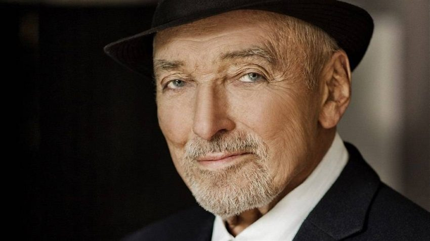
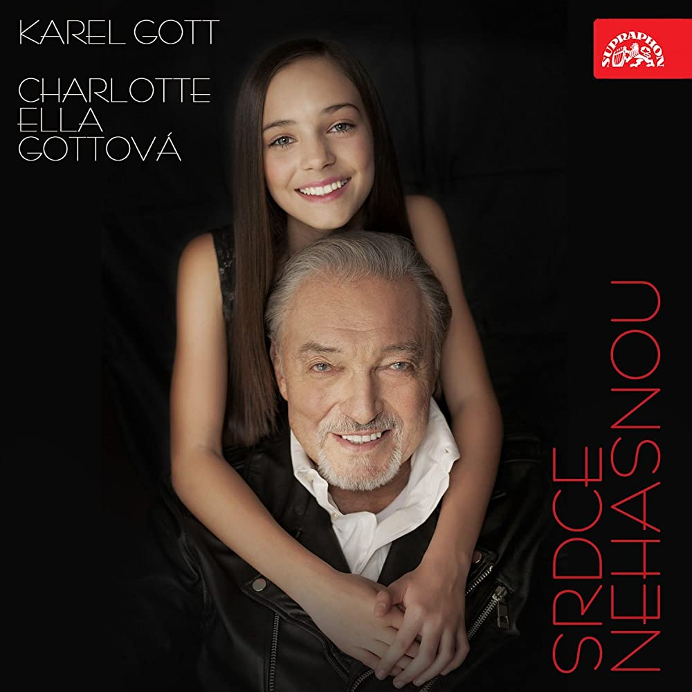
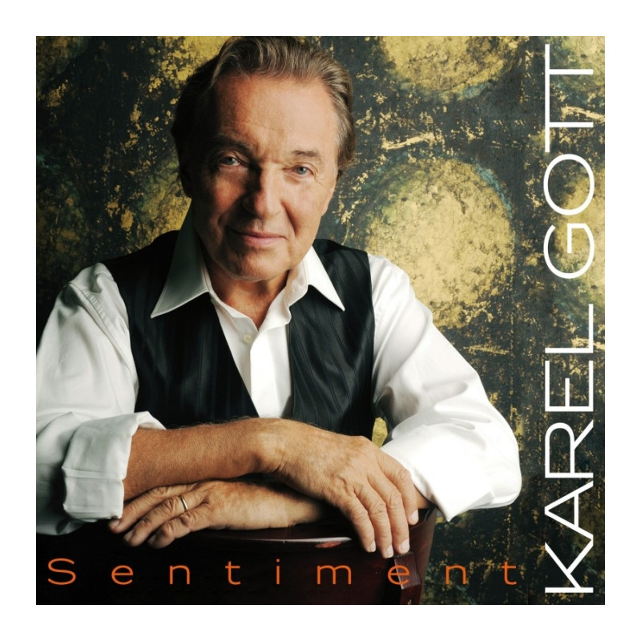
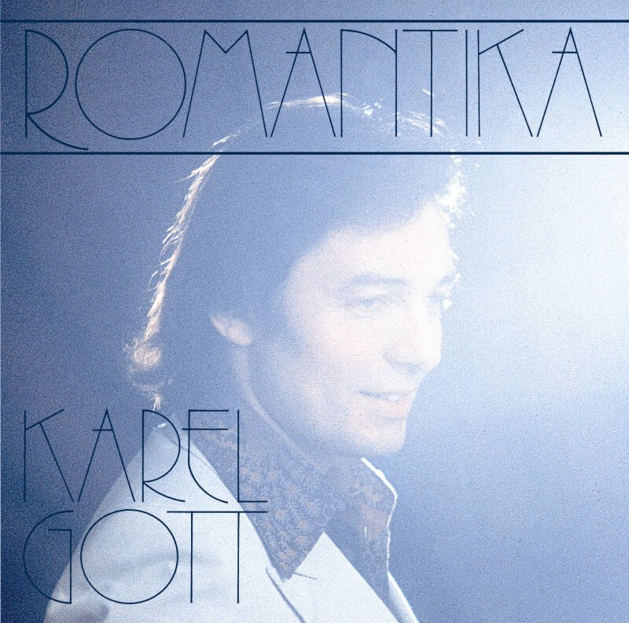
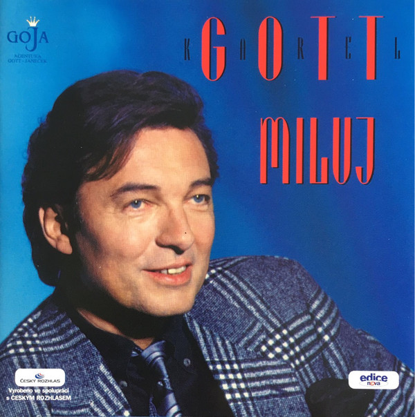
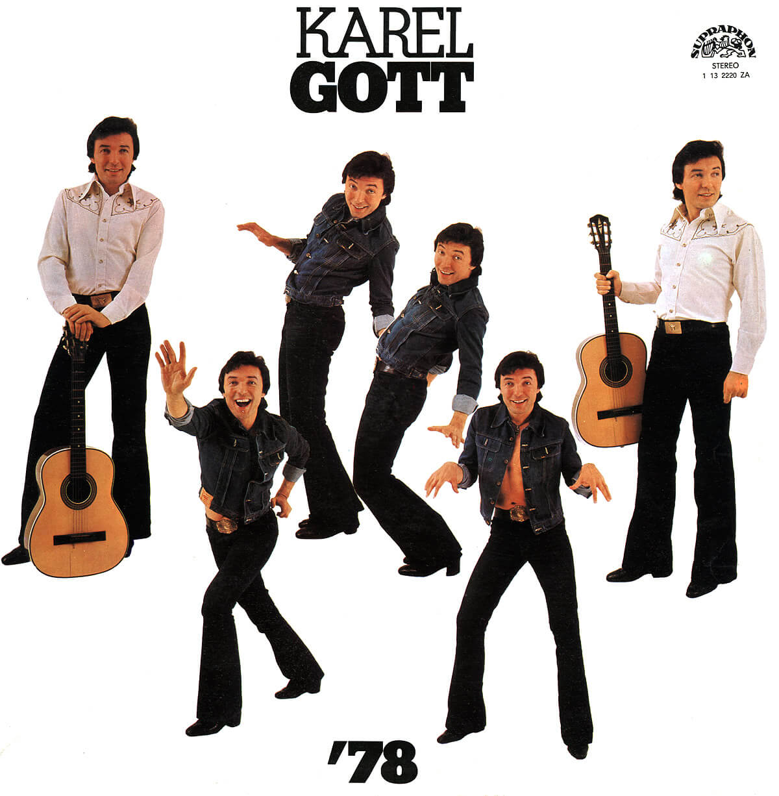

Karel Gott
Sinatra of the East

Biography
Albums

2019 - Srdce nehasnou

2011 - Sentiment
 2009 - Mé písně
2009 - Mé písně

2005 - Romantika

1997 - Miluj

1978 - '78
Awards
Český slavík
1963–1966, 1968–1981,
1983–1984, 1989–1990,
1996–1997, 1999–2011, 2013–2017
1963–1966, 1968–1981,
1983–1984, 1989–1990,
1996–1997, 1999–2011, 2013–2017
Absolutní vítěz
1991, 1992, 1994,
1996, 1999, 2002,
2006, 2009, 2014
1991, 1992, 1994,
1996, 1999, 2002,
2006, 2009, 2014
Zpěvák
1991–2009
a
2012–2014
1991–2009
a
2012–2014
Golden Henne
2017
2017
Trebbia
2019
2019